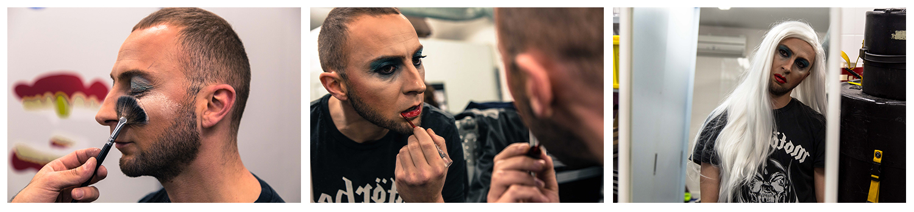

Mickael, chez lui
La nuit, Chantal est subversive, extravagante, un peu givrée. Une blonde peroxydée. Le jour, Mickael troque sa perruque contre un cartable en cuir, longeant les couloirs du lycée professionnel dans lequel il enseigne les Arts Appliqués.
Il n’est pas rare, élève, de s’interroger sur la vie privée de ses professeurs, attraper un ragot au vol, faire quelques recherches sur Google. Et ce jour-là, sur l’écran, des lycéens de Lyon le reconnaissent sous sa perruque blonde, son rouge à lèvres, ses talons aiguilles, son déguisement de femme extravagante: c’est bien lui, Mickael, leur professeur d’Arts Appliqués. En classe, depuis une dizaine d’années, on le voit surtout en jean et chemise, barbe plutôt fournie.
Longtemps, ses deux vies étaient cloisonnées, Mickael le jour, enseignant, artiste aussi, passé par les beaux arts. Le soir, il se transforme en femme. Et cette femme-là, c’est Chantal: elle est belle, belle comme la nuit. Blagues graveleuses, contouring de mise, elle rit, montre ses fesses à qui lui demande. Une énergumène en furie qui incarne la fête sans contrefaçon, dans l’excès mais aussi le respect, aux soirées lyonnaises du Sonic, petite péniche alternative puis au Sucre, haut lieu de culture des musiques électroniques. Autocrate, professionnelle, Chantal ne fait pas les choses à moitié. “Ces soirées, c’est mon coeur, ma chair et mon sang”. De rencontres en persuasions, elle devenue reine, “la matrone qui gère d’une main de fer la communauté queer à Lyon”, glisse Romain, aka Fifi du Calvaire, son plus proche collaborateur. Aujourd’hui, ses shows affichent complets en 10 minutes après la mise en vente des billets. 800 places qui s’arrachent en quelques clics. Chantal prend de l’ampleur, est prise en photo, devient un personnage public. Il est de plus en plus difficile de cacher publiquement sa deuxième vie.
Et si l’éducation nationale lui tombait dessus? “Je ne sais pas, ils le vireraient peut être ?”, hésite sa mère. Elle se souvient de ce coup de fil quand Mickael avait 20 ans. Il était six heures. Il a commencé: “Voila Maman, ça va être dur à dire… J’ai copain””. Elle pleure au téléphone. Il demande: “Tu m’aimes toujours ?
- Oui, je t’aime toujours. Et le sida ?
- Ne t’inquiète pas maman, je me protège”.
À la maison, son père avait lancé un jour: “Si mon fils est gay, je le tue”. Le père est peintre industriel, la mère coupeuse textile, Mickael fuit. Il choisit les études d’art, comme un échappatoire. “J’ai toujours été surprenant pour eux”.
...
Aujourd’hui, à 38 ans, il l’affirme : “Être gay, c’est une chance”. Il n’a jamais eu de doute sur sa sexualité, ni son identité. Il n’est pas transsexuel. “Je suis un garçon qui s’habille en fille”, “une trav-queer”. A l’internat de son lycée de Bourg-en-Bresse, le jeune homme aimait déjà les paillettes. “On avait le droit de faire une soirée, à condition d’organiser un spectacle. Alors je me suis déguisé en femme, mis des kilts à deux camarades de l’option sport football, et j’ai fini sur les genoux du proviseur”.
Devenu professeur à Lyon, Mickael aime son métier. Pour l’instant, pas question de démissionner. Le lycée ancre son quotidien. “Du temps de mes études, j’étais constamment en recherche artistique, c’était épuisant". Ce qu’il veut avant tout, c’est “échanger”. “Je dis souvent à mes élèves qu’on est sur le même pied d’égalité. C’est moi le capitaine du bateau mais on travaille en équipe”.
Dans ses cours, il jongle avec l’actualité et les références d’époque, Louis XIV et Lady Gaga se côtoient. Il évoque les temps passés où les hommes devaient se maquiller. En travaux pratiques, il fait dessiner à ses élèves un costume de scène pour Lady Gaga, s’inspirant des tenues de la renaissance. “J’essaye de leur dire que vivre en France, à Lyon, ce n’est pas le centre du monde”.
...
Dans son précédent lycée, la directrice avait convoqué Mickael. Il est inquiet, se tait, attend de savoir exactement ce qu’on lui reproche. Elle lui pose quelques questions. Des élèves sont tombés sur son book d’artiste de sa période aux beaux-arts, une écharpe de supporter de foot “In gode we trust” écrit en rose, des photos d’hommes nus… Il finit par s’expliquer, ajoute qu’il se travestit la nuit et rappelle “qu’il existe des lois contre l’homophobie”. La directrice ne va pas plus loin. Dans l’Éducation Nationale française, le sujet reste controversé: éducation sexuelle, débat sur les manuels scolaires, et même réaction du Pape... En 2013, le ministère a mis en place plusieurs outils pédagogique pour lutter contre le sexisme. Des associations conservatrices s’étaient emballer contre l’enseignement de la supposée “théorie du genre”. Une “journée de retrait de l’école” avait poussé certains parents à ne pas emmener leurs enfants en primaires et maternelles. Des sujets encore sensibles, et pas seulement côté parents.
L’année dernière, une classe de lycéens fini par découvrir le visage de Chantal. “Cela a été un épisode difficile pour moi. J’ai été touché”, confie Mickael. Il prend alors le temps d’expliquer les choses en cours. Ça s’est bien terminé.
...
“En restant toujours dans le cadre de la loi, je me permets de faire infuser des idées d’égalité”. il diffuse en classe un documentaire sur Alexander McQueen, grand styliste britannique ouvertement homosexuel et décédé en 2010. “Le genre est une chose qui est mouvante et qui doit se déconstruire. On nous façonne comme des garçons ou des filles dans des schémas qui sont très stéréotypés. Et finalement, être homophobe c’est détester les femmes, c’est être misogyne, c’est haïr la part de féminin en chacun de nous ».
“Il transpire ses convictions”, affirme Cedric, directeur d’exploitation du Sucre. Pense toujours à la sensibilisation, la prévention. Du stand de l’association Shams, qui milite pour la dépénalisation de l’homosexualité en Tunisie, à l’information sur la PrEP -traitement préventif contre le VIH. “La fête, c’est le meilleur média politique qu’on puisse avoir”.
...
Dans l’appartement de Mickael, le salon est transformé en studio artiste le temps d’un après-midi. Il s’occupe de la prochaine affiche de son show. Sur le canapé, Kamel regarde Mickael travailler, diriger la séance photo, lancer quelques directives. “Je suis le mec de Mickael”, précise-t-il. Et il insiste: “pas de Chantal. Elle est complètement indépendante, en roue libre”. Kamel pose sa cigarette. Sourit. “Ce qu’il veut faire comprendre, c’est que nous sommes tous beaux dans notre singularité.”
...
Lisa Burek - Dorian Cessa - Myriam Piguet
Crédits Photos : Dorian Cessa